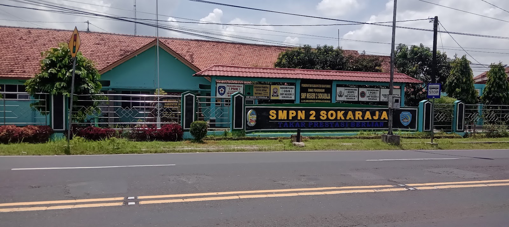

Beranda
Selamat datang di website sekolah SMP Negeri 2 Sokaraja
Profil
SMPN 2 Sokaraja terletak di JL. Suparjo Rustam NO.168, Dusun 1, Sokaraja Kulon, Kecamatan Sokaraja, beroperasi sejak 1979. Sekolah kami berkomitmen untuk memberikan pendidikan yang tidak hanya fokus pada akademik tetapi juga pengembangan karakter siswa. Kami memiliki tenaga pengajar yang berkualitas dan berpengalaman di bidangnya.
Layanan
SMPN 2 Sokaraja menawarkan layanan berikut:
- Pembelajaran Akademik: Kurikulum sesuai standar nasional.
- Bimbingan Konseling: Dukungan untuk masalah belajar dan emosional.
- Ekstrakurikuler: Kegiatan olahraga dan seni untuk pengembangan minat.
- Pelayanan Informasi: Akses informasi melalui website dan media sosial.
- Kegiatan Sosial: Program bakti sosial dan pengabdian masyarakat.
- Layanan Kesehatan: Pemeriksaan kesehatan rutin.
- Fasilitas Belajar: Ruang kelas, laboratorium, dan perpustakaan.
Galeri
Foto sekolah:
Kontak
Hubungi kami melalui (0281) 694133